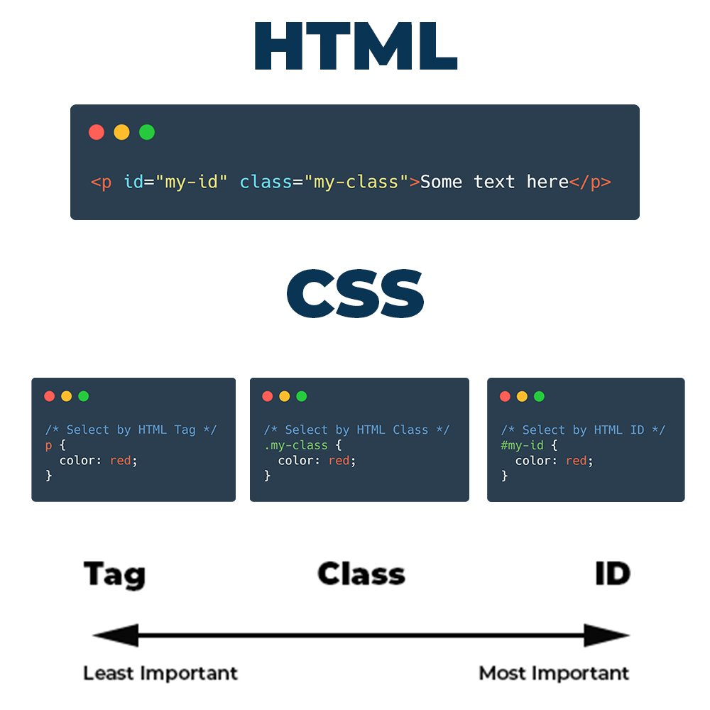
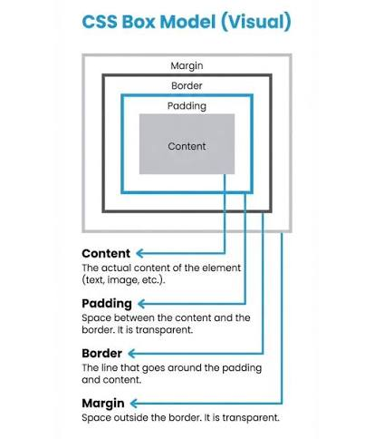

CSS selectors are used to target HTML elements so that styles can be applied to them. They help developers select specific elements on a webpage, such as tags, classes, or IDs. Element selectors target all elements of a specific type, class selectors target elements with a specific class name, and id selectors target a unique element on the page. CSS selectors are very important because they make styling more organized and allow developers to control the appearance of different parts of a webpage easily.

The CSS Box Model is a fundamental concept that describes how elements are displayed on a webpage. It consists of four parts: content, padding, border, and margin. The content is the actual text or image inside the element, padding adds space inside the element around the content, border surrounds the padding and content, and margin creates space outside the element. The box model is important because it helps developers control spacing and layout structure, making webpages clean, balanced, and visually organized.